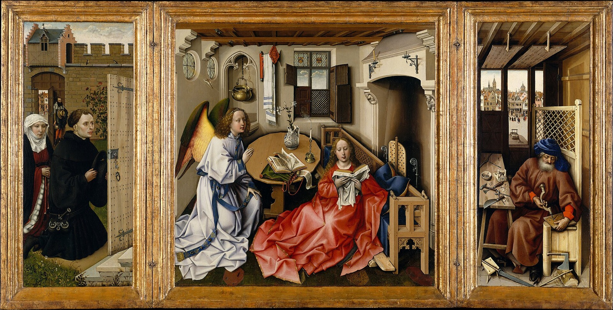

The Mérode Altarpiece Explained: Mousetraps and a Tiny Christ
What Joseph's mousetraps, the miniature Christ Child and the snuffed candle mean, and how this small Flemish triptych was put together in stages over several years.

Joseph is making mousetraps. In the right-hand panel of this small triptych the carpenter sits at his bench beside a half-built trap, and a finished one waits on the ledge of his shop window, facing the street. They look like a charming bit of workshop clutter. They are thought to be a theological joke.
Saint Augustine described the cross as the Devil's mousetrap, with the mortal Christ as the bait that lures him in. The Metropolitan Museum, which owns the triptych, says the traps are thought to allude to that image; its 1998 catalogue credits the connection to a 1945 study by the art historian Schapiro. Here, in a tidy Flemish workshop in the 1420s, is a man building the device that will catch the Devil, while next door his betrothed learns she will bear the bait.
That double way of seeing, where a household object can also be a sign, runs through the whole picture. So does a second surprise, which only technical study revealed: the altarpiece was not made all at once.
An angel in the living room
The centre panel shows the Annunciation, the moment the angel Gabriel tells Mary she will be the mother of Christ. Here it happens not in a church or at a church door but in a comfortable room at home, and the Met's 1998 catalogue From Van Eyck to Bruegel calls that a striking innovation for its time.
Look at what the angel's arrival does to the room. On the table the candle flame has just been snuffed out. The pages of the open book are lifting, and a scroll beside it has unrolled. All of it comes from the same sudden movement from the left, as if a door had opened on a draught.
Mary does not look up. She sits on the footrest of the bench rather than on the bench itself, a sign of humility, and stays absorbed in her reading. The catalogue, following the scholar Falkenburg, reads this as her receiving the message inwardly, through her devotions.
Now look up, to the round window at the top left. Seven golden rays slant in, and riding down them is a tiny figure holding a cross. This is the Christ Child arriving in person, already carrying the instrument of his death. The art historian Erwin Panofsky called the motif "popular rather than dignified". Theologians objected to it from the start, he noted, and Pope Benedict XIV later condemned it formally.
Symbols, or just furniture?
Plenty of objects in the room can carry a second meaning. The lilies in the majolica jug are an old sign of Mary's chastity. The basin and towel waiting in the room resemble those used for ritual washing before Mass, and Gabriel's robes have been read as the dress of a deacon assisting at Communion.
Panofsky built a famous theory on pictures like this: that early Netherlandish painters hid symbols in ordinary things. He also admitted the difficulty. The lilies here sit so naturally on the table, he wrote, that without hundreds of other Annunciations to compare, nobody could tell they were more than a pleasant still life.
The Met catalogue notes that his theory has been questioned again and again, and its example is the bench Mary leans against. Its lion finials and blue cushion and cloth may echo the throne of the Queen of Heaven. But it is also a carefully observed piece of contemporary furniture, with a backrest that flips so you could sit facing the fire in winter or the table in warmer months. Both readings can be true at once.
The same uncertainty surrounds Joseph's board, the one he is drilling full of holes. Three scholars have proposed three answers: the lid of a bait box, a strainer for a winepress (pointing to the wine of the Eucharist), or a fire screen to shield Mary from the flames of passion. If it is a bait box, it would tie in with Joseph's role in tricking the Devil, who must not discover that Mary's true bridegroom is the Holy Spirit. No one has settled it.
Even giving Joseph a panel of his own was a statement. Devotion to him was growing at the time, encouraged partly by the theologian Jean Gerson, who taught that Joseph shared fully in raising the Christ Child. Look past him through his window: snow is falling on the tiny figures in the town square, perhaps marking winter, the season of Christ's birth.
A picture built in three stages
The triptych looks like a single commission. It is not. The Met's account, based on stylistic and technical evidence, runs in three steps.
First came the Annunciation, painted in Robert Campin's workshop in Tournai from a slightly earlier workshop design, and probably not made to order. Its windows were covered in gold leaf. Soon afterwards a buyer ordered the two wings, which seem to be by two different painters, and had himself painted kneeling on the left. At some point the gold in the central windows was painted over with blue sky, and after that the coats of arms were added. Finally, in the 1430s, and presumably after he married, his wife and a messenger standing at the garden gate were painted into the left wing. Infrared and X-ray images show the wing first existed without them.
The wood supports the story without proving it. The oak of the centre panel may have been cut as much as twenty-five years earlier than the wood of the wings, which suggests, though it does not prove, that the parts were painted at different times. And the joins show if you look for them. The room is tipped up towards you. The round windows above Gabriel show open sky, where you would expect to see the brick wall of the garden in the left wing. Joseph's workshop follows a perspective of its own.
The couple at the door
On the left, the husband kneels at the open door and seems to see straight into the room. His wife kneels behind him, her view blocked, so she can only picture the miracle in her mind. Look at her hands: her rosary carries a small pendant of Saint Christopher, the Christ-bearer, possibly a sign of her wish to bear a child of her own.
The Met suggests that a scene of Christ's conception, set in a room much like the owners' own, may have fed their hope for children. The owners would have used it for private prayer.
Who they were is uncertain. In 1898 the shield in the left window of the central panel was traced to a family from Mechelen whose name is spelled Ymbrechts, Ingelbrechts, Engelbrechts and several other ways. One scholar noticed that Engelbrechts can be read as "the angel brings", a pun on the subject. The man at the gate has been identified as a messenger from the city of Mechelen.
The name the painting carries now came later. Prince Pierre d'Arenberg acquired it in Bruges around 1820, and in 1849 he gave it to his daughter Marie-Nicolette when she married Charles, count de Merode. It passed down through the family until The Cloisters bought it in 1956.
As for who held the brush, the Met credits the workshop of Robert Campin, the painter sometimes called the Master of Flémalle. Documents show he hired at least two assistants, the young Rogier van der Weyden and Jacques Daret. Rogier is known to have worked in the shop from 1427 to 1432, and some scholars have given the donor wing to him. The Met's 1998 catalogue gave the work to Campin and an assistant, possibly Rogier; the museum's current label says workshop of Campin, about 1427–32.
Living with it
The Mérode Altarpiece is only about 64 cm tall, and its best moments are tiny: a falling snowflake, a snuffed candle, a figure no bigger than a fingernail on a beam of light. Those are exactly the details a gallery visit tends to miss and a picture you see every day gives up slowly. One morning it is the mousetrap on the ledge; a week later, the saint on the wife's rosary.
Opened out, the triptych is almost twice as wide as it is tall, wider than a 16:10 Mac screen. artbip shows all three panels whole, filling the width with a thin band of blurred backdrop above and below, so no wing is ever trimmed. And when a detail catches you, the app has a longer note on this painting.
Sources
- Annunciation Triptych (Merode Altarpiece) — The Metropolitan Museum of Art (read via the web.archive.org copy of 29 December 2025)
- The Met Collection API record, object 470304
- Maryan W. Ainsworth and Keith Christiansen (eds.), From Van Eyck to Bruegel: Early Netherlandish Painting in The Metropolitan Museum of Art (The Metropolitan Museum of Art, 1998), cat. 2
- Erwin Panofsky, Early Netherlandish Painting: Its Origins and Character, vol. 1 (Harvard University Press, 1953)